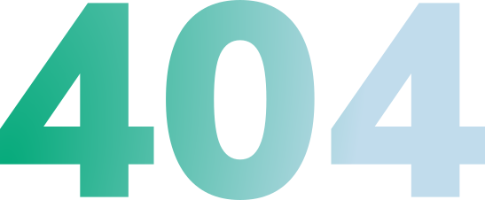

Sivua ei löydy
Etsimääsi sivua ei valitettavasti enää löydy. Se on joko siirretty tai kadonnut kuin pölyhiukkanen imuriin.
Palaa etusivulle

Etsimääsi sivua ei valitettavasti enää löydy. Se on joko siirretty tai kadonnut kuin pölyhiukkanen imuriin.